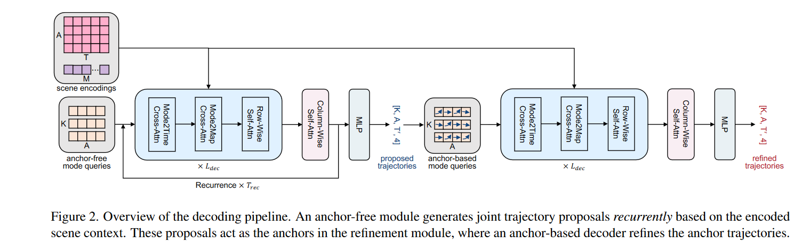
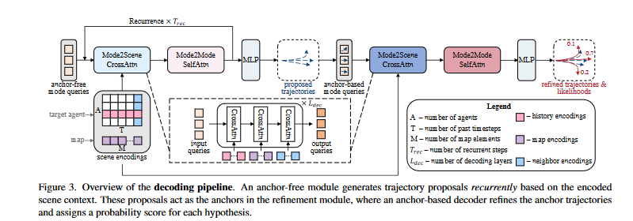
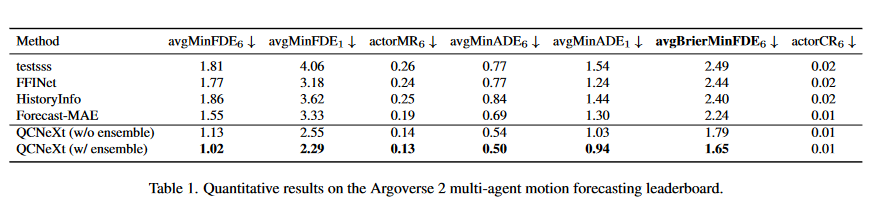
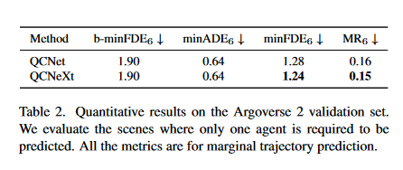
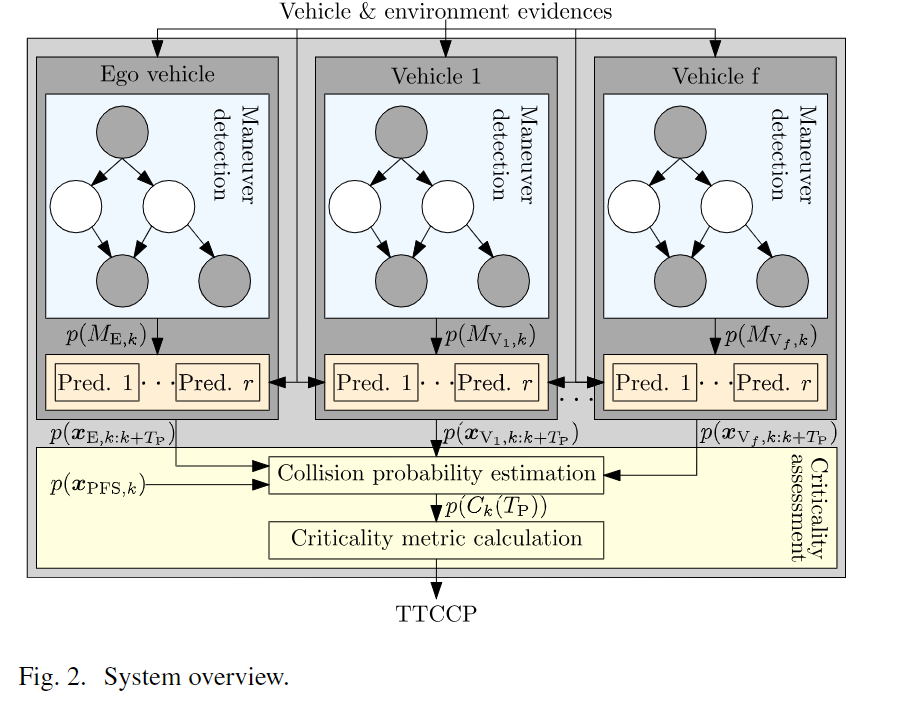
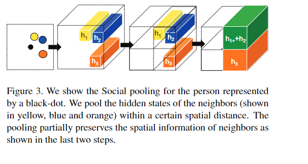
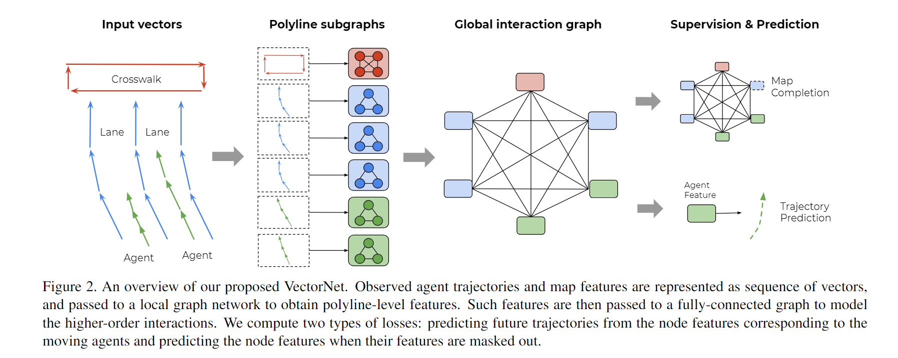
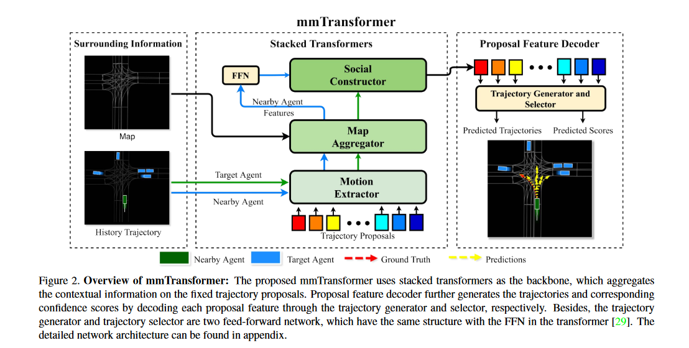
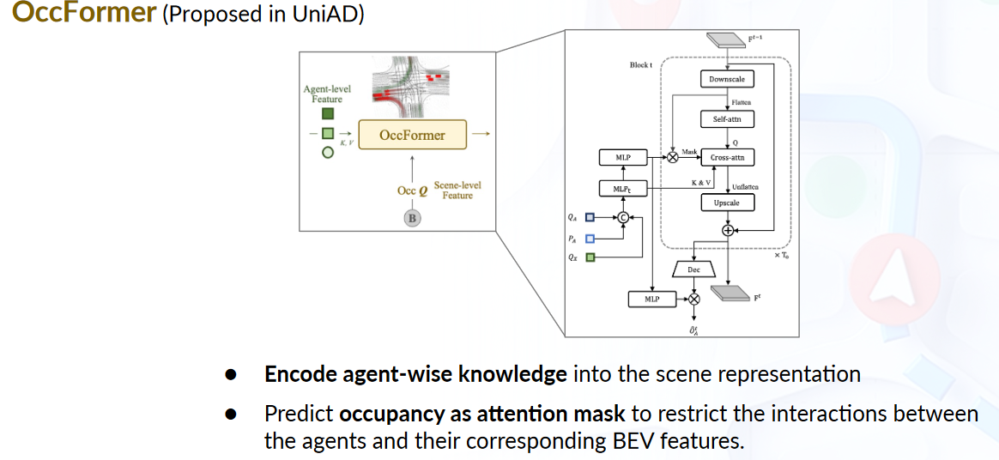

QCNext:何为下一代？
QCNxet的论文《QCNeXt: A Next-Generation Framework For Joint Multi-Agent Trajectory Prediction》。文章主要是对“下一代”进行讨论.
“论文原文解读”
论文中所提到的“下一代”是指 QCNet 的下一代。（其实就是在QCNet上的解释）
论文中提到了两个词语：“marginal distribution”和“joint distribution”，我们结合轨迹预测这个问题域进行解释：我们首先假设有个智能体，未来的时间步为。
-
“marginal distribution”——边缘分布：模型在进行多只能预测的通过解码器直接输出需要预测的N个之智能体体的轨迹，并没有考虑智能体在未来时间步内的交互。
-
“joint distribution”——联合分布：模型显示的考虑了智能体未来的交互，因此是联合分布。相较于边缘分布的相互独立的提取轨迹。这里更像是一个场景一个场景的进行预测：
下图是QCNxet的解码器

下面是QCNet：

通过对比QCNext最大的改进是增加了一个增加了一个在未来时间上的交互，这种直观上的感觉是正确的，既然我们在进行编码的时候就显示的考虑智能体之间的交互，那么我们在对未来预测的时候也因该考虑智能体之间的交互。
实验结果
通过上述操作模型在过去的方法上提升了预测的效果：


在实验过程中论文在原有的单一模型的基础上加入了集成的方法：
- 论文使用不同的随机种子来训练 8 个模型，总共产生 48 个场景级预测。对于每个场景，48 个场景级预测用于基于加权 k 均值算法的集成。具体来说，场景中所有目标agent的联合端点作为加权k-means算法的输入，场景级分数作为样本权重。聚类分配后，对每个聚类内的联合轨迹进行平均。这可以被视为边际轨迹预测常用集成策略的简单扩展。
QCNeXt 在 Argoverse 2 多智能体运动预测基准上的性能如表 1 所示可以看到集成策略可以显着提高模型的性能。但即使不使用集成，论文的方法在所有指标上都已经明显优于所有方法，这证明了论文的建模框架的优越性。
论文发现 Argoverse 2 验证/测试集中大约 20% 的场景仅评估一个智能体的预测结果。在这种情况下，联合轨迹分布和边缘轨迹分布的公式变得等效，因此论文很好奇联合预测模型和边缘预测模型在这些场景下的性能比较。此前，文献认为联合预测模型在边际指标上无法达到与边际预测模型相同的性能水平，因为联合预测任务必须考虑代理未来轨迹的一致性，因此是一项更具挑战性的任务。然而，论文惊讶地发现这个结论并不适合论文的方法。如表所示。如表 2 所示，在 minFDE6 和 MR6 等边际指标上，QCNeXt 的性能优于 Argoverse 2 上最强大的边际预测模型 QCNet 。更进一步说明了联合预测的有效性。
关于“下一代的讨论”
我们更宽泛的对“下一代”进行讨论，从轨迹预测模型的历史来看这一代代的模型是如何发展的。
从过去到如今轨迹预测模型经历了三个阶段：基于物理的方法，基于maneuver的方法，基于交互感知的方法。
基于物理的方法
基于物理的方法根据车辆的运动学和动力学特征预测车辆的未来轨迹。这些方法忽略了其他车辆和基础设施对目标车辆运动的影响，因此它们经常在超过一秒的预测范围内失败。
-
如过去的一些跟车模型IDM模型，GIPPS模型等，这些模型一般是基于统计物理的方法得到的。能够处理一些简单的场景；IDM模型（预测未来的速度）展示如下，模型只考虑了前车和自车的一些驾驶方法：
-
而且早期的这类模型其实并不是服务于自动驾驶，而是服务于
-
这类模型深处的时代也是以传统的数学，物理，统计学为基础的时代。
-
在该时代也出现了一种新的任务即：模型参数标定，不像深度学习，这类模型的一些参数是有实际意义的，可以结合数据的标定结果去分析数据的一些特性。
基于机动的方法（这一块了解不多）
基于机动的方法根据一组机动原型（maneuver prototype）预测目标车辆的未来运动。这些将道路的结构考虑在内进行长期预测，但仍然忽略了车辆间的交互作用。
-
加入道路等因素的考虑，相当于开始将车辆放在了真实的场景中进行分析
-
此时采用的方法也不局限于传统的物理的方法，开始采用统计机器学习的一些方法如在论文[4]中就采用了贝叶斯网络如下图所示：

-
通过引入道路等越苏可以避免一些不切实际的行为出现。
基于交互感知的方法（主要是看了这个）
基于交互感知的方法，将驾驶作为一种交互活动，吸引了越来越多的兴趣，与那些非交互感知方法相比表现出更好的性能。
得益于深度学习强大的自动表征能力，此时的方法更加以深度学习的方法为主。我阅读的第一篇关于交互感知的论文是：Social lstm：这是一篇用于行人轨迹预测的方法，采用了social pooling来提取agent与agent之间的交互：

随着图神经网络的发展，图神经网络在构建空间交互，非欧结构数据方面有着独有的优势。其中VectorNet就采用了图神经网络来结合车辆和场景的信息，建模交互：

也有用transformer进行编码的：如mmtransformer：

现在的比较热门的方法基本都属于交互感知的方法：如TNT，Dense TNT，HOME，QCNet等方法。基本的框架是：
- 编码器：编码场景上下文信息和车辆的轨迹信息
- 解码器：结合编码器的输出：输出agent未来的轨迹（每个时间步的坐标点）
在交互感知的方法中也出现了一些的分支，我们就输出结果的方式进行探讨：
就输出结果而言：分为单模态输出，多模态输出；单智能体输出，多智能体输出；并行输出，循环输出
-
单模态输出是模型只输出一条轨迹，该方法存在一定的缺陷，在论文[3]中通过实验发现该输出结果会是多模态输出的一种平均形式，会造成与实际不符合的情况

-
多模态输出是一种比较火也是比较复合实际的输出方式，这样的输出模拟的人的不确定性驾驶行为，模仿人类的驾驶意图，且效果更好。(如上图的子图a,c)
-
单智能体输出是指模型只输出一个智能体的结果，并且该模型可以在所有智能体上使用，这样可以节省计算成本，降低耗时；也可以看成是每辆车在未来没有交互，和被当成是边缘分布一样。
-
多智能体输出
-
边缘分布的方法：每个智能体类似于单独输出的，关于未来不存在交互
-
联合分布的方法：每个智能体在未来是有交互的，不独立。这样可以一定程度上保证一点的安全性，避免不安全的轨迹出现（这种联合分布预测的发展也是一种趋势）
-
除了本文所采用的方法之外（隐式的对安全性进行建模，因为联合分布中包括后面的评分，对轨迹冲突的分数会很低甚至不会出现对应的情况）；
-
另一种可以参考UniAD这篇论文，利用了未来估计的occupancy网格来使得驾驶更加安全。

-
-
- 并行输出是指像MLP或TNT这样（MLP可能隐含学习了未来时间步之间的一种表示；对于TNT这种可能在对anchor修正的时候也潜在的学习了未来时间步之间的联系）这样直接输出几个时间步内的结果，这存在一个潜在的假设（在给定anchor的情况下（TNT，multipath））未来的时间步是独立的；这样的计算效率更高
- 循环输出类似于social-LSTM这样，一个一个时间步的输出，这样的效率比较低，之间学习了未来时间步之间的联系。
除了对输出结果的讨论，还有对任务的讨论：单任务学习，多任务联合学习
- 单任务学习是指模型只服务于一个任务，对本篇文章而言就是轨迹预测，像QCNext，QCNet，TNT，HOME等都是属于单任务的；
- 多任务学习是指多个任务共同组成一条end-to-end的pipeline，多个任务的联合学习可以对每个任务都有一定的提升效果。而且也更符合自动驾驶算法的整体运行流程
- 早期的有IntentNet，将目标检测与轨迹预测结合起来学习。
- 现在随着大模型的发展，基于transformer的的自动驾驶大模型也被提出：UniAD；该算法统一了自动驾驶的感知，跟踪，预测和规划模块。
我认为未来的一个大趋势就是统一的端到端的大模型应用到自动驾驶中去，这也是人工智能：算法，大数据，算力共同推动的结果。
参考文献
[1]Zhou Z, Wen Z, Wang J, et al. QCNeXt: A Next-Generation Framework For Joint Multi-Agent Trajectory Prediction[J]. arXiv preprint arXiv:2306.10508, 2023.https://arxiv.org/abs/2306.10508
[2]Mo X, Xing Y, Lv C. Recog: A deep learning framework with heterogeneous graph for interaction-aware trajectory prediction[J]. arXiv preprint arXiv:2012.05032, 2020.https://arxiv.org/abs/2012.05032
[3]Cui H, Radosavljevic V, Chou F C, et al. Multimodal trajectory predictions for autonomous driving using deep convolutional networks[C]//2019 International Conference on Robotics and Automation (ICRA). IEEE, 2019: 2090-2096.https://arxiv.org/abs/1809.10732
[4]Schreier M, Willert V, Adamy J. An integrated approach to maneuver-based trajectory prediction and criticality assessment in arbitrary road environments[J]. IEEE Transactions on Intelligent Transportation Systems, 2016, 17(10): 2751-2766.https://ieeexplore.ieee.org/abstract/document/7412746
[5]A. Alahi, K. Goel, V. Ramanathan, A. Robicquet, L. Fei-Fei and S. Savarese, “Social LSTM: Human Trajectory Prediction in Crowded Spaces,” 2016 IEEE Conference on Computer Vision and Pattern Recognition (CVPR), Las Vegas, NV, USA, 2016, pp. 961-971, doi: 10.1109/CVPR.2016.110.https://ieeexplore.ieee.org/document/7780479
[6] Gao J, Sun C, Zhao H, et al. Vectornet: Encoding hd maps and agent dynamics from vectorized representation[C]//Proceedings of the IEEE/CVF Conference on Computer Vision and Pattern Recognition. 2020: 11525-11533.https://arxiv.org/abs/2005.04259
[7] Liu Y, Zhang J, Fang L, et al. Multimodal motion prediction with stacked transformers[C]//Proceedings of the IEEE/CVF Conference on Computer Vision and Pattern Recognition. 2021: 7577-7586.https://arxiv.org/abs/2103.11624
[8] Hu Y, Yang J, Chen L, et al. Goal-oriented Autonomous Driving[J]. arXiv preprint arXiv:2212.10156, 2022.https://arxiv.org/abs/2212.10156
[9]Casas S, Luo W, Urtasun R. Intentnet: Learning to predict intention from raw sensor data[C]//Conference on Robot Learning. PMLR, 2018: 947-956.https://arxiv.org/abs/2101.07907